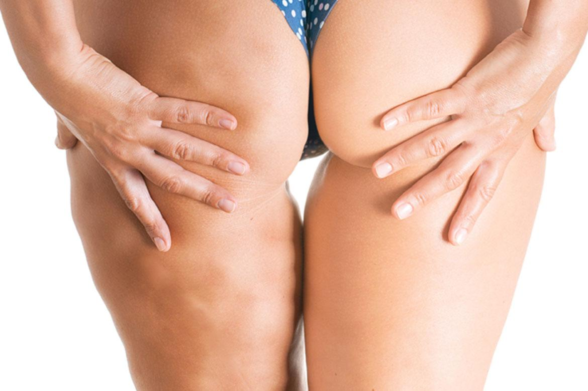
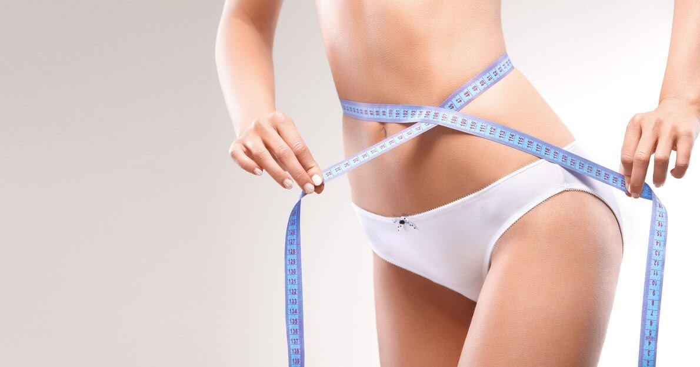

Gesso terapia
A Gesso terapia é uma técnica estética que utiliza o gesso como método terapêutico para modelar e tonificar o corpo. Na RRCorpus, oferecemos a gesso terapia com o objetivo de proporcionar uma remodelação corporal eficaz, ajudando a reduzir medidas, combater a celulite e flacidez, e melhorar a aparência da pele.
Tipos de gesso terapia que Oferecemos
Gesso Lipolítico

Usado para modelar o corpo e reduzir medidas.
Gesso hidratante
Melhora a aparência da pele, reduzindo os sinais de celulite
Gesso tonificante:

Promove a firmeza e elasticidade da pele, combatendo a flacidez.
Gesso clareador
indicado para clarear manchas na pele e uniformizar o tom da pele.
Benefícios da Gesso terapia
Redução de Medidas
Ajuda a diminuir a circunferência de áreas específicas do corpo.
Combate à Celulite
Melhora a aparência da pele, reduzindo os sinais de celulite.
Tonificação da Pele
Promove a firmeza e elasticidade da pele, combatendo a flacidez.
Modelagem Corporal
Define e modela o contorno corporal.
Melhora da Circulação
Estimula a circulação sanguínea, promovendo uma melhor oxigenação dos tecidos.
Como é Realizada a Gesso terapia
O procedimento de gesso terapia envolve a aplicação de uma mistura específica de gesso e ativos redutores sobre a pele, seguida por um período de repouso para a secagem do gesso. O tratamento inclui:
Preparação da Pele
Limpeza e esfoliação da área a ser tratada.
Aplicação dos Ativos
Produtos específicos são aplicados para potencializar os resultados.
Enfaixamento com Gesso
O gesso é aplicado sobre a área, promovendo compressão e absorção dos ativos.
Tempo de Ação
O gesso permanece na pele por um tempo determinado para agir.
Remoção
Após o tempo de ação, o gesso é removido e a pele é limpa novamente.
Indicações da Gesso terapia
A gesso terapia é indicada para pessoas de todas as idades e tipos de pele.
Agende sua Sessão
Experimente os benefícios da Gessoterapia no RRCorpus. Nossa equipe está pronta para oferecer um atendimento de excelência, focado em proporcionar resultados visíveis e duradouros. Agende sua sessão agora mesmo e sinta a diferença.